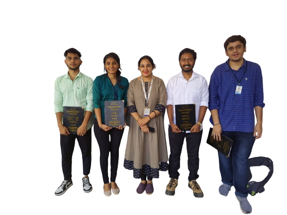

University of MumbaiTerna Engineering College · Computer Engineering
BACHELOR OF ENGINEERING · MAJOR PROJECT
QuadTree Visualizer
An interactive study of spatial partitioning and collision detection, defended on 25 April 2022.
PROJECT TEAM
Amey Thakur · Hasan Rizvi · Mega Satish · Ajay Davare
Guided by Prof. Randeep Kaur Kahlon